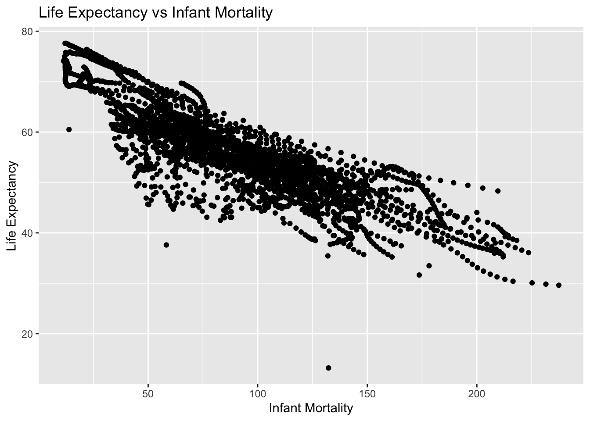
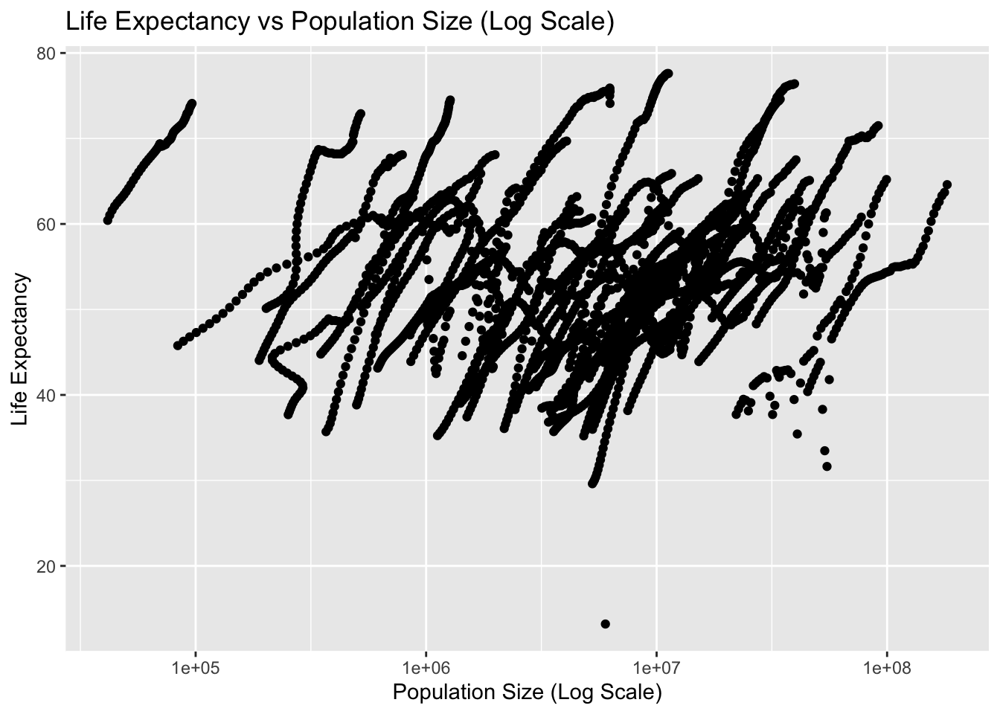
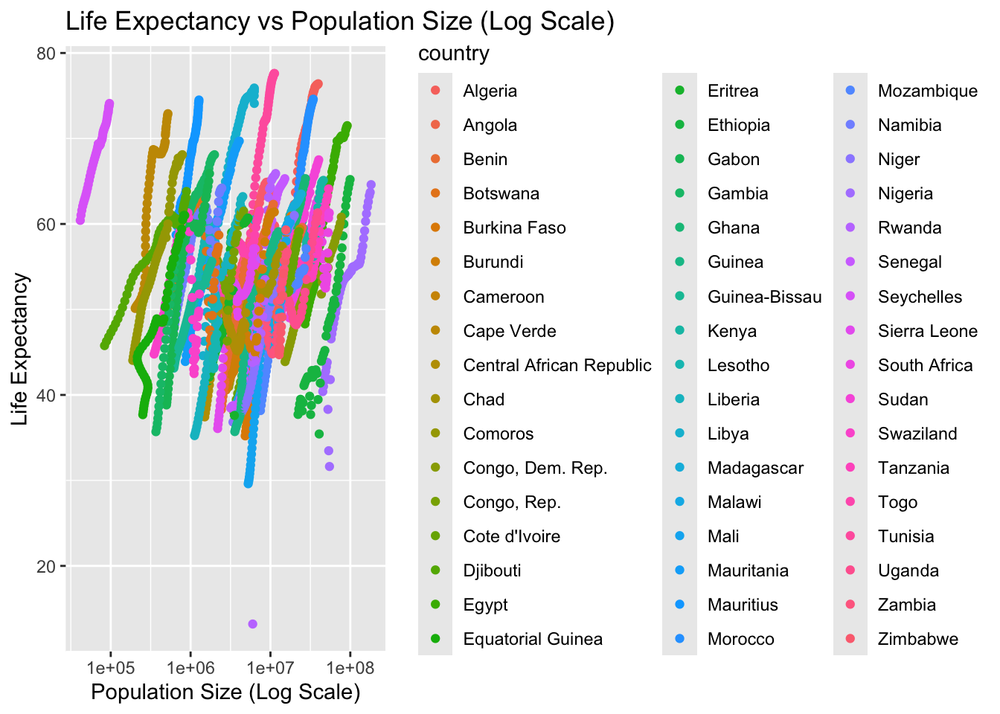
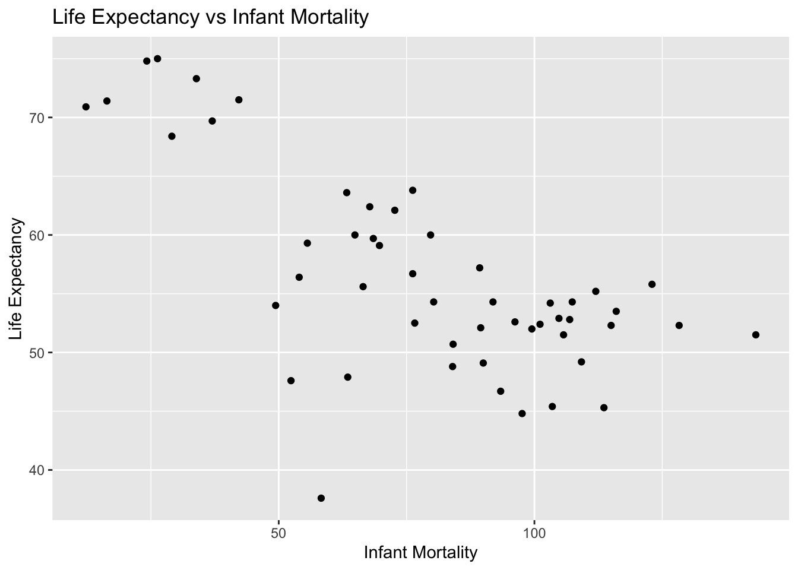
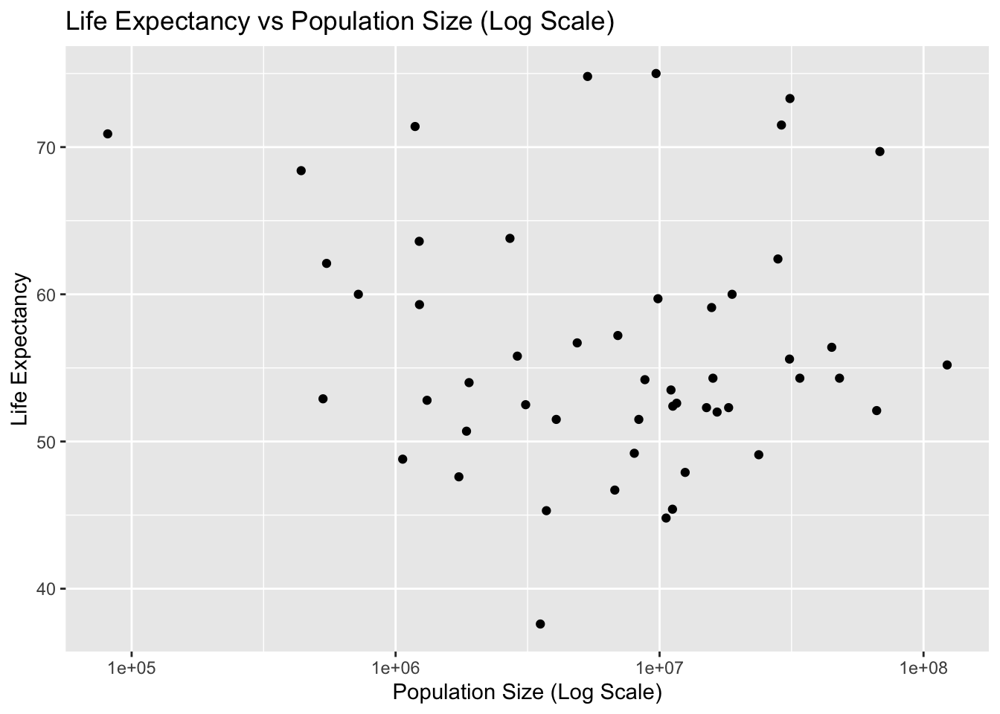
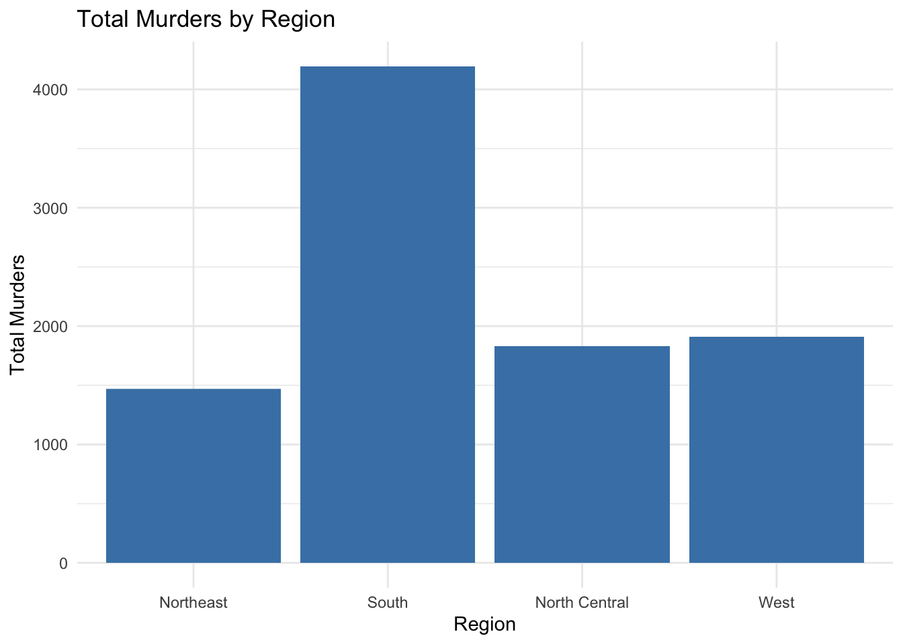
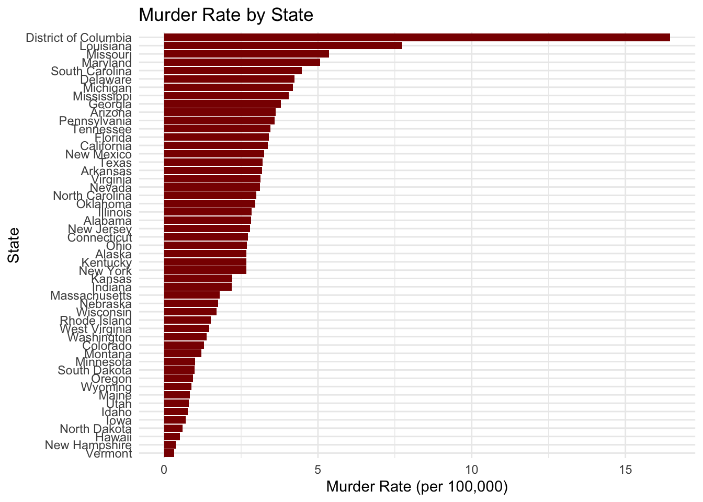

# This chunk of code loads in the dslabs package, we will be using the gapminder dataset for this execise.
# Using library() to load dslabs package
library("dslabs")R Coding Exercise
0.1 Loading and checking data
0.1.1 Loading the package
0.1.2 Using the help() function
# This chunk involves pulling up the help page for the gapminder dataset. This will give us an overview of the dataset and what it contains.
# Using help() to view help page
help(gapminder)0.1.3 Structure and Summary - str() & summary()
# In this chunk we will be using the str and summary function to look at the data.
# Using str() to display the internal structure of the dataset
str(gapminder)'data.frame': 10545 obs. of 9 variables:
$ country : Factor w/ 185 levels "Albania","Algeria",..: 1 2 3 4 5 6 7 8 9 10 ...
$ year : int 1960 1960 1960 1960 1960 1960 1960 1960 1960 1960 ...
$ infant_mortality: num 115.4 148.2 208 NA 59.9 ...
$ life_expectancy : num 62.9 47.5 36 63 65.4 ...
$ fertility : num 6.19 7.65 7.32 4.43 3.11 4.55 4.82 3.45 2.7 5.57 ...
$ population : num 1636054 11124892 5270844 54681 20619075 ...
$ gdp : num NA 1.38e+10 NA NA 1.08e+11 ...
$ continent : Factor w/ 5 levels "Africa","Americas",..: 4 1 1 2 2 3 2 5 4 3 ...
$ region : Factor w/ 22 levels "Australia and New Zealand",..: 19 11 10 2 15 21 2 1 22 21 ...# Using summary() to produce result summary of values
summary(gapminder) country year infant_mortality life_expectancy
Albania : 57 Min. :1960 Min. : 1.50 Min. :13.20
Algeria : 57 1st Qu.:1974 1st Qu.: 16.00 1st Qu.:57.50
Angola : 57 Median :1988 Median : 41.50 Median :67.54
Antigua and Barbuda: 57 Mean :1988 Mean : 55.31 Mean :64.81
Argentina : 57 3rd Qu.:2002 3rd Qu.: 85.10 3rd Qu.:73.00
Armenia : 57 Max. :2016 Max. :276.90 Max. :83.90
(Other) :10203 NA's :1453
fertility population gdp continent
Min. :0.840 Min. :3.124e+04 Min. :4.040e+07 Africa :2907
1st Qu.:2.200 1st Qu.:1.333e+06 1st Qu.:1.846e+09 Americas:2052
Median :3.750 Median :5.009e+06 Median :7.794e+09 Asia :2679
Mean :4.084 Mean :2.701e+07 Mean :1.480e+11 Europe :2223
3rd Qu.:6.000 3rd Qu.:1.523e+07 3rd Qu.:5.540e+10 Oceania : 684
Max. :9.220 Max. :1.376e+09 Max. :1.174e+13
NA's :187 NA's :185 NA's :2972
region
Western Asia :1026
Eastern Africa : 912
Western Africa : 912
Caribbean : 741
South America : 684
Southern Europe: 684
(Other) :5586 0.1.4 Object Type - class()
# This chunk outputs the object type of the 'gapminder' dataset.
# Using class() to print object type of 'gapminder'
class(gapminder)[1] "data.frame"0.2 Processing Data
# This chunk of code loads in the tidyverse package, creates a new dataset called 'africadata', and then prints the structure and a summary of data
# Using the library() function again, but this time loading in the 'tidyverse' package
library(tidyverse)── Attaching core tidyverse packages ──────────────────────── tidyverse 2.0.0 ──
✔ dplyr 1.1.3 ✔ readr 2.1.4
✔ forcats 1.0.0 ✔ stringr 1.5.1
✔ ggplot2 3.5.1 ✔ tibble 3.2.1
✔ lubridate 1.9.2 ✔ tidyr 1.3.0
✔ purrr 1.0.2
── Conflicts ────────────────────────────────────────── tidyverse_conflicts() ──
✖ dplyr::filter() masks stats::filter()
✖ dplyr::lag() masks stats::lag()
ℹ Use the conflicted package (<http://conflicted.r-lib.org/>) to force all conflicts to become errors# Using tidyverse to filter the gapminder dataset where continent equals Africa
africadata <- gapminder %>% filter(continent == "Africa")
# Printing the structure of the dataset
str(africadata)'data.frame': 2907 obs. of 9 variables:
$ country : Factor w/ 185 levels "Albania","Algeria",..: 2 3 18 22 26 27 29 31 32 33 ...
$ year : int 1960 1960 1960 1960 1960 1960 1960 1960 1960 1960 ...
$ infant_mortality: num 148 208 187 116 161 ...
$ life_expectancy : num 47.5 36 38.3 50.3 35.2 ...
$ fertility : num 7.65 7.32 6.28 6.62 6.29 6.95 5.65 6.89 5.84 6.25 ...
$ population : num 11124892 5270844 2431620 524029 4829291 ...
$ gdp : num 1.38e+10 NA 6.22e+08 1.24e+08 5.97e+08 ...
$ continent : Factor w/ 5 levels "Africa","Americas",..: 1 1 1 1 1 1 1 1 1 1 ...
$ region : Factor w/ 22 levels "Australia and New Zealand",..: 11 10 20 17 20 5 10 20 10 10 ...# Printing a summary of the dataset
summary(africadata) country year infant_mortality life_expectancy
Algeria : 57 Min. :1960 Min. : 11.40 Min. :13.20
Angola : 57 1st Qu.:1974 1st Qu.: 62.20 1st Qu.:48.23
Benin : 57 Median :1988 Median : 93.40 Median :53.98
Botswana : 57 Mean :1988 Mean : 95.12 Mean :54.38
Burkina Faso: 57 3rd Qu.:2002 3rd Qu.:124.70 3rd Qu.:60.10
Burundi : 57 Max. :2016 Max. :237.40 Max. :77.60
(Other) :2565 NA's :226
fertility population gdp continent
Min. :1.500 Min. : 41538 Min. :4.659e+07 Africa :2907
1st Qu.:5.160 1st Qu.: 1605232 1st Qu.:8.373e+08 Americas: 0
Median :6.160 Median : 5570982 Median :2.448e+09 Asia : 0
Mean :5.851 Mean : 12235961 Mean :9.346e+09 Europe : 0
3rd Qu.:6.860 3rd Qu.: 13888152 3rd Qu.:6.552e+09 Oceania : 0
Max. :8.450 Max. :182201962 Max. :1.935e+11
NA's :51 NA's :51 NA's :637
region
Eastern Africa :912
Western Africa :912
Middle Africa :456
Northern Africa :342
Southern Africa :285
Australia and New Zealand: 0
(Other) : 0 # This chunk will create two new datasets using the four 3 variables mentioned in the assignment instructions.
# Using the gapminder dataset to filter and select the correct columns (infant_mortality & life_expectancy)
p1_africadata <- gapminder %>%
# Filtering the data to only include the continent, Africa.
filter(continent == "Africa") %>%
# Selecting the columns we want
select(infant_mortality, life_expectancy)
# Doing the same processes as before, filtering and selecting the proper columns (population & life_expectancy)
p2_africadata <- gapminder %>%
# Filtering the data to only include the continent, Africa.
filter(continent == "Africa") %>%
# Selecting the columns we want
select(population, life_expectancy)
# str() and summary() to look at the data in both new objects/datasets
# P1 Dataset
str(p1_africadata)'data.frame': 2907 obs. of 2 variables:
$ infant_mortality: num 148 208 187 116 161 ...
$ life_expectancy : num 47.5 36 38.3 50.3 35.2 ...summary(p1_africadata) infant_mortality life_expectancy
Min. : 11.40 Min. :13.20
1st Qu.: 62.20 1st Qu.:48.23
Median : 93.40 Median :53.98
Mean : 95.12 Mean :54.38
3rd Qu.:124.70 3rd Qu.:60.10
Max. :237.40 Max. :77.60
NA's :226 # P2 Dataset
str(p2_africadata)'data.frame': 2907 obs. of 2 variables:
$ population : num 11124892 5270844 2431620 524029 4829291 ...
$ life_expectancy: num 47.5 36 38.3 50.3 35.2 ...summary(p2_africadata) population life_expectancy
Min. : 41538 Min. :13.20
1st Qu.: 1605232 1st Qu.:48.23
Median : 5570982 Median :53.98
Mean : 12235961 Mean :54.38
3rd Qu.: 13888152 3rd Qu.:60.10
Max. :182201962 Max. :77.60
NA's :51 0.3 Plotting
0.3.1 Life Expectancy vs Infant Mortality
# This chunk generates a plot when displaying life_expectancy as a function of infant_mortality The plot is stored in a variable and is displayed using a print function.
# Creating the plot, x-axis is infant_mortality and the y-axis is life_expectancy.
plot1 <- ggplot(p1_africadata, aes(x = infant_mortality, y = life_expectancy)) +
# Specifying this as a scatterplot or point graph
geom_point() +
# Adding labels to the graph/axis
labs(title = "Life Expectancy vs Infant Mortality",
x = "Infant Mortality",
y = "Life Expectancy")
# Printing plot
print(plot1)Warning: Removed 226 rows containing missing values or values outside the scale range
(`geom_point()`).
0.3.2 Life Expectancy vs Population Size (Log Scale)
# This chunk generates a plot when displaying life_expectancy as a function of population. The plot is stored in a variable and is displayed using a print function.
# Creating the plot, x-axis is population and the y-axis is life_expectancy.
plot2 <- ggplot(p2_africadata, aes(x = population, y = life_expectancy)) +
# Specifying this as a scatterplot or point graph
geom_point() +
# Setting the x-axis to log scale
scale_x_log10() +
# Adding labels to graph/axis
labs(title = "Life Expectancy vs Population Size (Log Scale)",
x = "Population Size (Log Scale)",
y = "Life Expectancy")
# Printing plot
print(plot2)Warning: Removed 51 rows containing missing values or values outside the scale range
(`geom_point()`).
0.3.3 ‘Streaks’ of Data
The plots above exhibit ‘streaks’ of data, this could be due to the fact that there is a ‘year’ column in the dataset, meaning that if a country has multiple years of data, that country will appear on the graph for each year this data was recorded thus creating ‘streaks’ on the plot. We can visualize this by using the color option in ggplot to highlight the different countries.
# This chunk creates the same plot as above, however makes use of the color option in ggplot to highlight each country. This is to illustrate how having a time variable creates the streaks in the plots
# Creating the plot and storing it in the plot3 variable
plot3 <- ggplot(africadata, aes(x = population, y = life_expectancy, colour = country)) +
# Setting as scatterplot/point graph
geom_point() +
# Applying log scale to x-axis
scale_x_log10() +
# Adding labels to graph
labs(title = "Life Expectancy vs Population Size (Log Scale)",
x = "Population Size (Log Scale)",
y = "Life Expectancy")
# Printing plot
print(plot3)Warning: Removed 51 rows containing missing values or values outside the scale range
(`geom_point()`).
0.4 More Data Processing
0.4.1 Years with missing data
# This chunk displays which years having missing data for infant mortality, it uses the tidyverse package to filter and select the proper years. The years are then printed using a print function.
# Finding the years in africadata that having missing values for infant mortality a storing it in the variable missing_years
missing_years <- africadata %>%
# Filtering data to find NA values in infant_mortality
filter(is.na(infant_mortality)) %>%
# Selecting the 'year' value that has NA values in infant_mortality
select(year) %>%
# Applying distinct so the years don't duplicate and are distinct
distinct()
# Printing years with missing values in infant_mortality
print(missing_years) year
1 1960
2 1961
3 1962
4 1963
5 1964
6 1965
7 1966
8 1967
9 1968
10 1969
11 1970
12 1971
13 1972
14 1973
15 1974
16 1975
17 1976
18 1977
19 1978
20 1979
21 1980
22 1981
23 2016We can see that there are missing values for infant_mortality for every year up to 1981 and then again in 2016. Seeing as those include missing values, we should avoid those years and use the year suggested in the assignment instructions, 2000.
0.4.2 2000 Africa Data
# This chunk creates a new dataset featuring only the continent, Africa, and the year 2000. This will be saved under the variable africadata_2000.
# Filtering and saving the proper data into the new variable.
africadata_2000 <- gapminder %>%
# Filtering the data to only include the continent and year, Africa and 2000.
filter(continent == "Africa" & year == 2000)
# Displaying the structure of the new dataset
str(africadata_2000)'data.frame': 51 obs. of 9 variables:
$ country : Factor w/ 185 levels "Albania","Algeria",..: 2 3 18 22 26 27 29 31 32 33 ...
$ year : int 2000 2000 2000 2000 2000 2000 2000 2000 2000 2000 ...
$ infant_mortality: num 33.9 128.3 89.3 52.4 96.2 ...
$ life_expectancy : num 73.3 52.3 57.2 47.6 52.6 46.7 54.3 68.4 45.3 51.5 ...
$ fertility : num 2.51 6.84 5.98 3.41 6.59 7.06 5.62 3.7 5.45 7.35 ...
$ population : num 31183658 15058638 6949366 1736579 11607944 ...
$ gdp : num 5.48e+10 9.13e+09 2.25e+09 5.63e+09 2.61e+09 ...
$ continent : Factor w/ 5 levels "Africa","Americas",..: 1 1 1 1 1 1 1 1 1 1 ...
$ region : Factor w/ 22 levels "Australia and New Zealand",..: 11 10 20 17 20 5 10 20 10 10 ...# Displaying a summary of the data
summary(africadata_2000) country year infant_mortality life_expectancy
Algeria : 1 Min. :2000 Min. : 12.30 Min. :37.60
Angola : 1 1st Qu.:2000 1st Qu.: 60.80 1st Qu.:51.75
Benin : 1 Median :2000 Median : 80.30 Median :54.30
Botswana : 1 Mean :2000 Mean : 78.93 Mean :56.36
Burkina Faso: 1 3rd Qu.:2000 3rd Qu.:103.30 3rd Qu.:60.00
Burundi : 1 Max. :2000 Max. :143.30 Max. :75.00
(Other) :45
fertility population gdp continent
Min. :1.990 Min. : 81154 Min. :2.019e+08 Africa :51
1st Qu.:4.150 1st Qu.: 2304687 1st Qu.:1.274e+09 Americas: 0
Median :5.550 Median : 8799165 Median :3.238e+09 Asia : 0
Mean :5.156 Mean : 15659800 Mean :1.155e+10 Europe : 0
3rd Qu.:5.960 3rd Qu.: 17391242 3rd Qu.:8.654e+09 Oceania : 0
Max. :7.730 Max. :122876723 Max. :1.329e+11
region
Eastern Africa :16
Western Africa :16
Middle Africa : 8
Northern Africa : 6
Southern Africa : 5
Australia and New Zealand: 0
(Other) : 0 0.5 More Plotting
0.5.1 Life Expectancy vs Infant Mortality
# This chunk generates a plot when displaying life_expectancy as a function of infant_mortality for the year 2000 in africa. The plot is stored in a variable and is displayed using a print function.
# Creating the plot, x-axis is infant_mortality and the y-axis is life_expectancy.
plot4 <- ggplot(africadata_2000, aes(x = infant_mortality, y = life_expectancy)) +
# Specifying this as a scatterplot or point graph
geom_point() +
# Adding labels to the graph/axis
labs(title = "Life Expectancy vs Infant Mortality",
x = "Infant Mortality",
y = "Life Expectancy")
# Printing plot
print(plot4)
0.5.2 Life Expectancy vs Population Size (Log Scale)
# This chunk generates a plot when displaying life_expectancy as a function of population. The plot is stored in a variable and is displayed using a print function.
# Creating the plot, x-axis is population and the y-axis is life_expectancy.
plot5 <- ggplot(africadata_2000, aes(x = population, y = life_expectancy)) +
# Specifying this as a scatterplot or point graph
geom_point() +
# Setting the x-axis to log scale
scale_x_log10() +
# Adding labels to graph/axis
labs(title = "Life Expectancy vs Population Size (Log Scale)",
x = "Population Size (Log Scale)",
y = "Life Expectancy")
# Printing plot
print(plot5)
Based on those plots, there seems to still be a negative correlation between infant mortality and life expectancy, and no noticeable correlation between population size and life expectancy.
0.6 Simple Model Fits
0.6.1 Fit 1: Life Expectancy ~ Infant Mortality
# This chunk of code involves fitting life expectancy as the outcome and infant mortality as the predictor. The model is saved to the new variables fit1 and then a summary of the model is printed using summary()
# Fit 1: Life Expectancy as a function of Infant Mortality
fit1 <- lm(life_expectancy ~ infant_mortality, data = africadata_2000)
# Printing a summary of the model
summary(fit1)
Call:
lm(formula = life_expectancy ~ infant_mortality, data = africadata_2000)
Residuals:
Min 1Q Median 3Q Max
-22.6651 -3.7087 0.9914 4.0408 8.6817
Coefficients:
Estimate Std. Error t value Pr(>|t|)
(Intercept) 71.29331 2.42611 29.386 < 2e-16 ***
infant_mortality -0.18916 0.02869 -6.594 2.83e-08 ***
---
Signif. codes: 0 '***' 0.001 '**' 0.01 '*' 0.05 '.' 0.1 ' ' 1
Residual standard error: 6.221 on 49 degrees of freedom
Multiple R-squared: 0.4701, Adjusted R-squared: 0.4593
F-statistic: 43.48 on 1 and 49 DF, p-value: 2.826e-08From the result of this model, we can see that for each unit increase in infant_mortality, there is a 0.18916 decrease in life_expectancy. If we look at the p-value, we can conclude that infant_mortality has a statistically significant relationship with life_expectancy.
0.6.2 Fit 2: Life Expectancy ~ Population
# This chunk of code involves fitting life expectancy as the outcome and population as the predictor. The model is saved to the new variables fit2 and then a summary of the model is printed using summary()
# Fit 1: Life Expectancy as a function of Population
fit2 <- lm(life_expectancy ~ population, data = africadata_2000)
# Printing a summary of the model
summary(fit2)
Call:
lm(formula = life_expectancy ~ population, data = africadata_2000)
Residuals:
Min 1Q Median 3Q Max
-18.429 -4.602 -2.568 3.800 18.802
Coefficients:
Estimate Std. Error t value Pr(>|t|)
(Intercept) 5.593e+01 1.468e+00 38.097 <2e-16 ***
population 2.756e-08 5.459e-08 0.505 0.616
---
Signif. codes: 0 '***' 0.001 '**' 0.01 '*' 0.05 '.' 0.1 ' ' 1
Residual standard error: 8.524 on 49 degrees of freedom
Multiple R-squared: 0.005176, Adjusted R-squared: -0.01513
F-statistic: 0.2549 on 1 and 49 DF, p-value: 0.6159Unlike the previous model, the p-value for population leads us to the conclusion that there is no statistically significant relationship between population and life_expectancy. Therefore, the population variable may not be a good predictor to use in this model unless it’s modeled using a different method(like taking the log or interaction terms using ‘*’).
1 Part 3
1.1 This section contributed by Nicholas Stevenson
Pick another dataset from dslabs, whichever one you want. Unfortunately, the dslabs package doesn’t have a nice website. But you can go to its offical CRAN entryLinks to an external site. and click on Reference Manual. The pdf lists the various other datasets and for each provides a brief explanation.
Once you chose one of the datasets, write R code to go through similar steps as above. Specifically, do the following:
1. Explore the dataset
# Load the dataset
data("murders")
# Display the first few rows of the dataset
head(murders) state abb region population total
1 Alabama AL South 4779736 135
2 Alaska AK West 710231 19
3 Arizona AZ West 6392017 232
4 Arkansas AR South 2915918 93
5 California CA West 37253956 1257
6 Colorado CO West 5029196 652. Do any processing/cleaning you want to do.
# Add a murder rate column (murders per 100,000)
murders <- murders %>%
mutate(murder_rate = total / population * 100000)
# Display the first few rows with the new column
head(murders) state abb region population total murder_rate
1 Alabama AL South 4779736 135 2.824424
2 Alaska AK West 710231 19 2.675186
3 Arizona AZ West 6392017 232 3.629527
4 Arkansas AR South 2915918 93 3.189390
5 California CA West 37253956 1257 3.374138
6 Colorado CO West 5029196 65 1.2924533. Make a few exploratory figures. Optionally, also some tables.
# Total murders by region
ggplot(murders, aes(x = region, y = total)) +
geom_bar(stat = "identity", fill = "steelblue") +
labs(title = "Total Murders by Region", x = "Region", y = "Total Murders") +
theme_minimal()
# Murder rate by state
ggplot(murders, aes(x = reorder(state, murder_rate), y = murder_rate)) +
geom_bar(stat = "identity", fill = "darkred") +
coord_flip() +
labs(title = "Murder Rate by State", x = "State", y = "Murder Rate (per 100,000)") +
theme_minimal()
# Summary statistics by region
summary_table <- murders %>%
group_by(region) %>%
summarize(
total_murders = sum(total),
avg_murder_rate = mean(murder_rate),
median_murder_rate = median(murder_rate)
)
summary_table# A tibble: 4 × 4
region total_murders avg_murder_rate median_murder_rate
<fct> <dbl> <dbl> <dbl>
1 Northeast 1469 1.85 1.80
2 South 4195 4.42 3.40
3 North Central 1828 2.18 1.97
4 West 1911 1.83 1.294. Run some simple statistical model(s). Your choice.
# Fit the linear regression model
fit <- lm(murder_rate ~ population, data = murders)
# Summary of the model
summary(fit)
Call:
lm(formula = murder_rate ~ population, data = murders)
Residuals:
Min 1Q Median 3Q Max
-2.2762 -1.4347 -0.2191 0.5561 13.8577
Coefficients:
Estimate Std. Error t value Pr(>|t|)
(Intercept) 2.575e+00 4.640e-01 5.549 1.15e-06 ***
population 3.363e-08 5.092e-08 0.661 0.512
---
Signif. codes: 0 '***' 0.001 '**' 0.01 '*' 0.05 '.' 0.1 ' ' 1
Residual standard error: 2.47 on 49 degrees of freedom
Multiple R-squared: 0.008825, Adjusted R-squared: -0.0114
F-statistic: 0.4363 on 1 and 49 DF, p-value: 0.5125. Report the results from the model(s).
The p-value for the population coefficient (0.512) is much greater than 0.05, indicating that the relationship between population size and murder rate is not statistically significant.